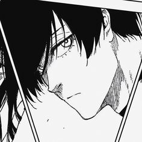
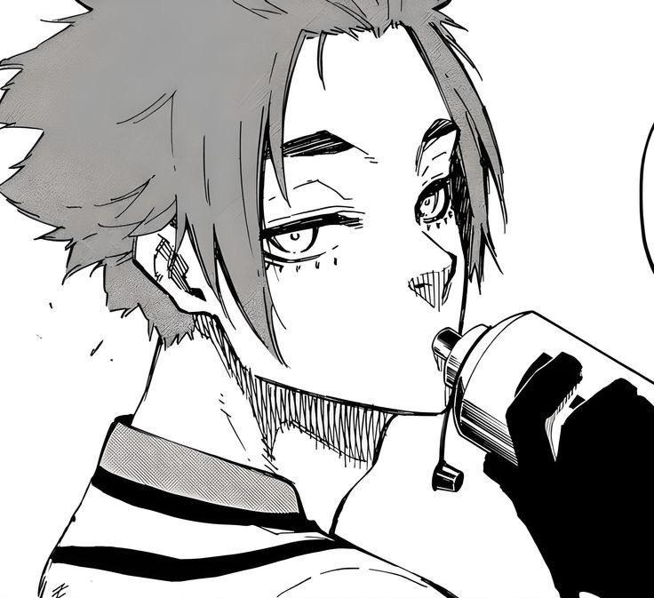
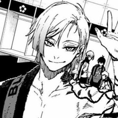
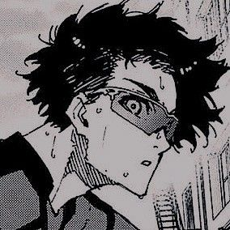
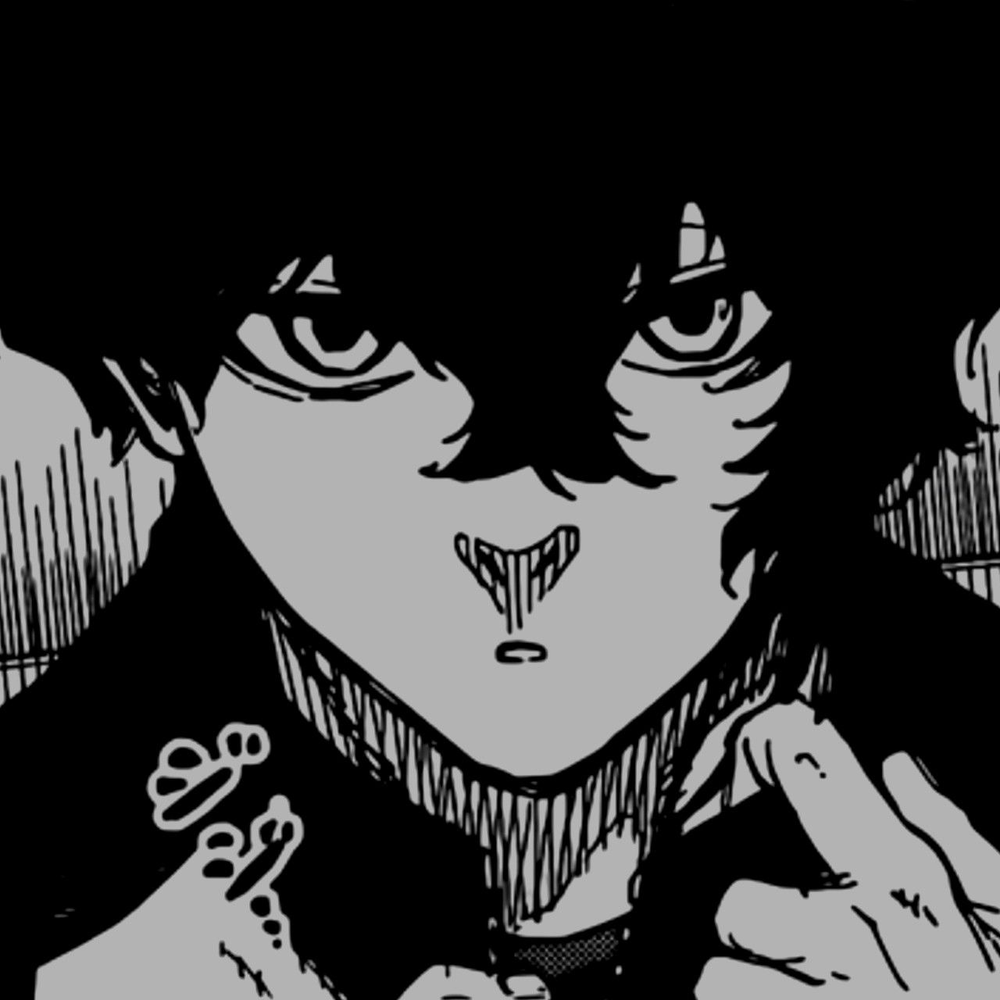

| Characters | Information | Abilities |
|---|---|---|
|  | ╔════ Itoshi Rin ════╗ Rin is the younger brother of Sae Itoshi, who started playing football with him at a young age. He has played as a forward on every team he was on and has always been regarded as one of the top players. He is regarded as Blue Lock's best player until he is officially confirmed to be by Jinpachi Ego at the beginning of the Third Selection. |
• Perfect Kick Accuracy • Spatial Awareness • Off-the-Ball Movements • Dribbling • Puppet-Controlling Soccer • Flow State |
|  | ╔════ Itoshi Sae ════╗ Sae is a prodigy football player, who is known as the best player in Japan. Sae is also a member of the New Generation World XI, as well as the Royale (Real Madrid) Youth team. He is the older brother of Rin Itoshi. |
• Playmaker • Professional Football Technique • Perfect Kick Technique • Counter-Dribbling • Reflex • Metavision |
|  | ╔════ Michael Kaiser ════╗ Michael Kaiser is a prodigy U-20 forward from Germany who plays for Bastard München during the Neo Egoist League as the team's ace and main striker. Kaiser is regarded as a genius and is also a member of the New Generation World XI. |
• Off-the-Ball Movements • Professional Football Technique • Predator Eye • Kaiser Impact • Clinical Finisher • Metavision |
|  | ╔════ Kenyu Yukimiya ════╗ Yukimiya, a stubborn and highly-driven forward who suffers from an eye condition known as optic neuropathy, is fighting with everything he has to become the best striker in the world before his time runs out. When first introduced, he was ranked #5 during the Third Selection and he later played as a left winger for the match between Blue Lock Eleven and the Japan U-20 team. |
• Mobile Striker • 1-on-1 Emperor Style • Immense Speed • Gyro Shot • Flow State • Forwards |
|  | ╔════ Jin Kiyora ════╗ Jin Kiyora is a contender of Blue Lock, who currently plays as a left-back for Germany's Bastard München during the Neo Egoist League. |
• Forwards • Nimble Dribbling • Grounder Kick Accuracy • Backspin Pass • Twister Pass • Superior Physicality |